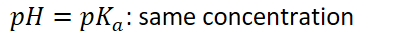

Relative concentrations of an acid and its conjugate base can be predicted by comparing the pH of a solution to the pK~a~ of the acid in that solution
{width="7.3125in" height="0.3541666666666667in"}
{width="7.947916666666667in" height="0.3541666666666667in"}
{width="4.239583333333333in" height="0.3541666666666667in"}
Acid-base indicators can be used to determine the pH of the original solution
Indicators can change color based on pH of the solution
Indicator chosen in a titration should change color as close as possible to the indicator point